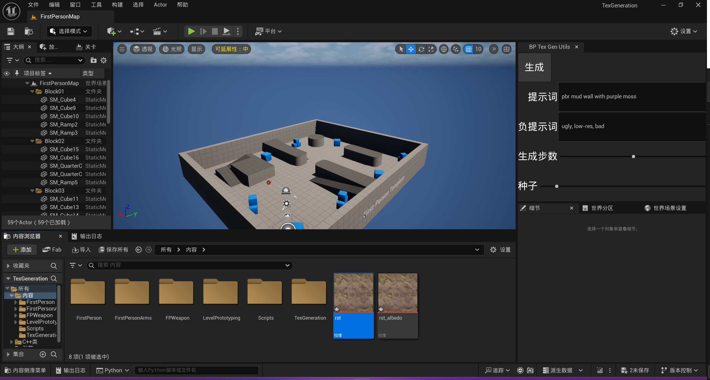
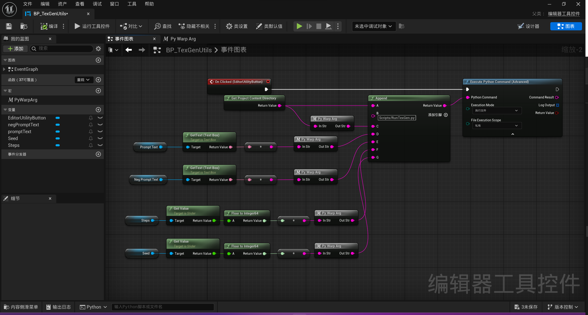
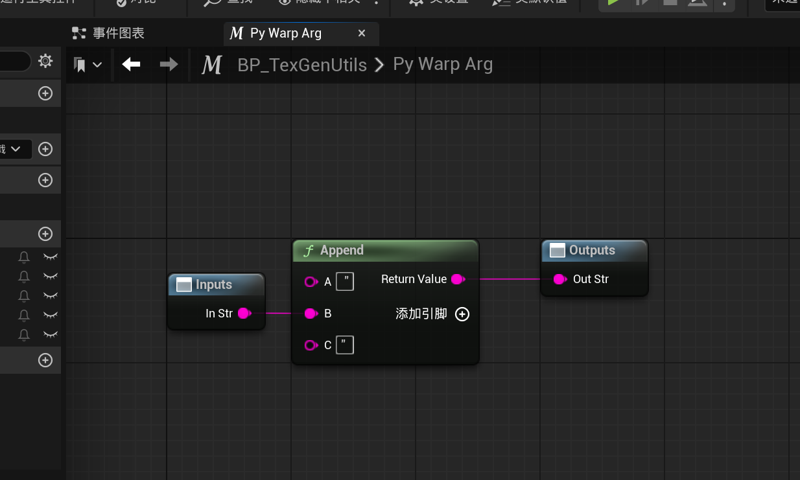
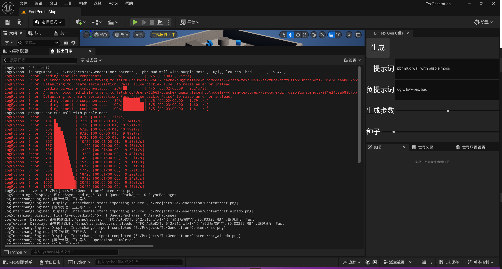

虚幻引擎之基于AI的贴图生成方法
前言
今年年初，由于公司部门的变动，我从原来的云服务部门调到了新成立的AI部门。
AI是最近最火热的东西，我虽然肯定算不上专业，但是也稍微有粗略的接触过一点点。再加上部门新成立没有什么业务上的压力，我便花了点时间去做了些预言，这个工具便是其中之一。
这个工具是为了研究如何将AIGC和3D工作流结合起来的成果。当时选了几个方向，包括AIGC贴图、AIGC模型和3D结合controlnet来辅助AIGC文生图等等。研究的过程中用Unreal Engine搭了些简单的demo，很可惜后续有真正的项目推进后，这些预研的内容也并未有进一步的推进了，觉得有些许可惜，于是便打算在这里记录一下。
同时这个项目也上传到了Git，有兴趣的欢迎查看：UETextureGeneration。
介绍
大体流程
这个demo的流程非常简单，参照一般文生图的流程，填写提示词、负提示词、生成步数和种子等信息。这些参数将传入给到文生图的Python脚本，脚本会运行一个大模型来创建对应的结果。

安装步骤
下面介绍一下这个工具所需要的准备工作。
-
首先我们需要找到引擎的python地址，如C:\UnrealEngine\UE_5.3\Engine\Binaries\ThirdParty\Python3\Win64，找到这个路径的python.exe文件。虚幻引擎是以这个Python来运行Python脚本，所以我们对应的Python库需要安装在这个路径之下。
-
记录下上面的Python的路径，打开cmd或其他命令行工具，以:
“C:\UnrealEngine\UE_5.3\Engine\Binaries\ThirdParty\Python3\Win64\python.exe” -m pip install XXX这种格式来使用pip安装对应的库。
-
需要安装的库包括以下这些：
- transformers, diffusers, accelerate（hugging face）
- pytorch（https://pytorch.org/get-started/locally/， https://pytorch.org/get-started/previous-versions/)
- numpy
- opencv-python
python的版本可能不支持最新的pytorch版本，如ue5.3使用的python 3.9.7只能支持到pytorch2.1，需要根据版本来安装合适的版本，numpy支持到1.24.1版本，opencv-python支持到4.6.0版本。
ue5.5的Python升级到了3.11，所以可以支持到更新的版本了，请在安装前检查一下，要不然很容易出现问题。
文件布局
三个脚本放在Scripts文件夹下，分别对应着漫反射贴图生成、法线和置换贴图生成以及提升贴图分辨率三个流程。
下面简单介绍一下这个几个脚本对应的能力。
漫反射贴图生成：
脚本名称：RunTexGen.py
漫反射贴图生成使用模型：texture diffusion
模型基于stable diffusion 2 base，通过DreamBooth微调，可通过文生图的方式生成材质的漫反射贴图，尽量不包含光照和阴影信息。
法线贴图生成：
脚本名称：RunNormalGen.py
为了有更加真实的光照表现效果，贴图一般会配合法线贴图使用。
从漫反射贴图生成法线贴图的库有好几个，比如说deepbump，demo使用的是Material-Map-Generator(MMG)，因为它还可以生成DisplacementMap和RoughnessMap，这两张贴图同样可以增强模型在3D光照环境下的表现。
置换贴图：
上文提到了置换贴图（DisplacementMap），这个资源也是一个提升模型显示效果的手段。法线贴图增加模型细节是不需要修改模型本身的顶点形状的，只是通过提供更为细致的平面法线信息辅助光照计算。
置换贴图则是可以真实的修改模型的形状。
在UE中可以使用模型工具通过DisplacementMap来丰富模型的细节，也有另外一种方法视差遮挡映射（ParallaxOcclusionMapping)，我在UE中使用的是这种方法。
Upscale：
脚本名称：RunUpScale.py
使用Upscale Pipeline stable-diffusion-x4-upscaler-img2img，将原有的贴图分辨率从512X512提升到2048X2048，模型精度有比较大的提升，但是显存需求显著增大，并且消耗时间显著增长。
使用
最简单的方式是参照下面的蓝图方式调用即可。


最初调用的时候由于需要下载对应的模型，所以时间会相对来说久一些。并且由于是从hugging face上下载模型，可能需要梯子。
